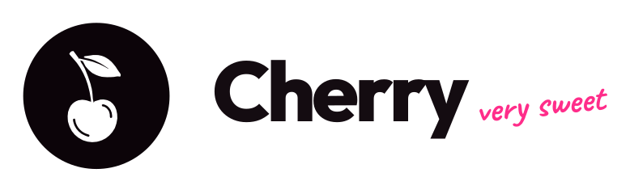
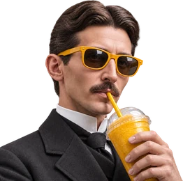
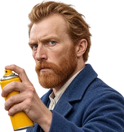
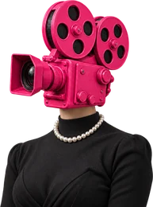

Creator · ◆ 20 créditos SGuiones
Escribe tu video escena por escena, míralo dibujado y llévalo a grabar. Son los mismos del Laboratorio.
3Por grabar
2Grabados
41Publicados
Tus guiones
de sergiosaac.coPor grabar 3Grabados 2Publicados 41
A Instagram no le importa que tu video sea lindo
★ ideagancho★ estructuraformato
1:24 · 7 escenas


Deja de usar CapCut: Cherry es más fácil
idea★ gancho★ estructuraformato
0:58 · sin storyboard
Por qué tus reels se quedan en 200 vistas
ideaganchoestructuraformato
sin escribir · solo la idea
A Instagram no le importa que tu video sea lindo
Por grabarIdeaLo bonito no retiene★ Magnética · 3 de 3
GanchoContradicción● Temporal · 2 de 4
EstructuraDoble zanahoria★ Magnética · 4 de 5
FormatoDinámico○ Sin probar
1:24286 palabras · al ritmo con que hablas (3,4 por segundo)Cabe en 1:30 ✓
#EscenaLo que dicesLo que se ve
1Gancho0–3 sA Instagram le da igual que tu video sea lindo. Lo que mira es otra cosa.Primer plano, miras a la cámara; al fondo la pantalla con el perfil.
2Descarte3–9 sPuedes gastar la tarde en el color y en la música, y aun así se te van al segundo dos.Manos editando en el portátil, corte rápido.
3Aplazamiento9–15 sTe voy a decir lo único que mira, pero primero mira esto.De espaldas frente al computador, la curva de retención.
4Prueba15–38 sEste video feo tuvo 120 mil vistas y este bonito, 900. La diferencia está en los primeros tres segundos.Pantalla partida con los dos videos y sus números.
5Concepto38–60 sSe llama retención: cuánta gente se queda. Eso es lo que Instagram premia.Texto grande en pantalla: RETENCIÓN.
Storyboard
5 de 7 dibujadas6
7
Verlo en el Laboratorio ↗
Nuevo guion
¿por dónde empezamos?Lo que ya te funciona
Desde una idea magnética
Escoge una idea de tu baúl que ya te dio vistas y haz otro video con ella.

Cherry lo escribe
Guion premium
Le cuentas el tema o tu objetivo y Cherry lo escribe entero, con tu forma de hablar.
✦ PremiumDel baúl
Desde una fórmula
Usa una de tus fórmulas guardadas: idea, gancho, estructura y formato ya escogidos.

A tu manera
Lo escribo yo
Escoge la estructura y escribe escena por escena. Cherry te ayuda en cada una.

Tus ideas, primero las que más te han funcionado
Lo bonito no retiene★ Magnética · 3 de 3mejor: 120 mil vistas
El editor que cobra por hora★ Magnética · 2 de 2mejor: 48 mil vistas
Graba 10 videos en una tarde● Temporal · 2 de 3mejor: 31 mil vistas
Con «Lo bonito no retiene», ¿cómo lo escribimos?